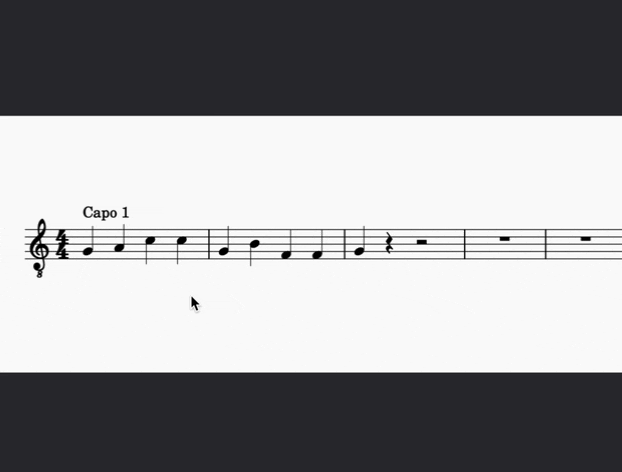

Applying capos
Overview
A capo is a device that can be clamped onto the fretboard of a fretted stringed instrument, such as the guitar. The capo effectively shortens the strings, which makes the instrument play in a higher key than it normally would.
MuseScore allows you to emulate this effect by adding a Capo marking to an instrument staff (or staves). This automatically transposes playback to the desired pitch while keeping the notes, or fretmarks, unchanged. Partial capos, where only some strings are shortened, are also possible (see below).
Applying a capo to your score
The capo element is available in the Guitar palette, which is hidden by default.
To find the capo element:
- Click the Search Palettes button at the top of the palettes, or use the shortcut Ctrl+F9 (macOS: Cmd+F9).
- Type "capo".
Alternatively, to permanently reveal the Guitar palette:
- Click Add palettes
- Click the Add button next to Guitar
Note: The Add palettes dialog is not currently accessible to screen readers, so blind users must use the first method (via search).
To apply a capo to a staff:
- In the score, select the note or rest where you want to add a capo marking.
- In the Guitar palette, select the Capo element. * “Capo 1” text is added to the score, and a Capo settings popup dialog appears next to it.
- Adjust the capo's settings in the popup dialog (see below).

Adjusting capo settings
The Capo settings popup dialog appears when you add a new capo marking or select an existing capo marking in the score.
Note: Keyboard users can press Tab to focus the Capo settings popup after it has appeared, and then use the arrow keys to navigate the available settings. If you press Tab a second time the popup will disappear. To get it back, simply deselect the capo marking with Alt+Left, reselect it with Alt+Right, and then press Tab to focus the popup.
Turning capo on or off
- Select On at the top of the Capo settings dialog to indicate that a capo should be added to the instrument.
- Select Off to indicate that the capo should be removed from the instrument and return playback to the original key.
By default, if you select Off the text in the score will change to read "No capo".
Setting capo fret position
The number in the Fret spinner refers to the fret where the capo should be applied. For example, fret 1 transposes the key up by a semitone, fret 2 by a whole tone, and so on. The text label in the score will update automatically.
For example, if you choose fret 4, the text in the score will say "Capo 4".
Note: Keyboard focus can get stuck in the fret edit control. If this happens, press Up and Down to change the value of the spinner, then press Right to move to the Apply to string checkboxes below.
Setting the transposition behavior
This feature is only available in MuseScore Studio 4.7 and later versions.
There are three options in the dropdown menu beneath the Capo On/Off buttons.
By default, notation and tablature fret markings will be shown as if the player were playing in open position.
For example, in the image below the capo has been applied to the second fret. When Notation/tab in open position is selected, the highest sounding note of this F major chord is stopped at the first fret from the capo (the third fret from the nut of the guitar).
In playback, a G major chord will be heard, since the capo at the second fret transposes the guitar up one whole tone.

Use Notation/tab in open position if the capo is used simply to transpose the music to a higher pitch than notated. For ease of readability, the guitarist can continue to read either the standard stave or the tablature stave as if they were playing in open position.
When Notation shows sounding pitches is selected, the notes on the standard stave will show the actual sounding pitches (in the below example, a G major chord). The tablature continues to show the played pitches as if the guitarist were reading in open position.
In playback, a G major chord is heard.

Use Notation shows sounding pitches if it's important to see the actual pitches being played by the guitarist, for example when using a guitar score as a source file for arrangements, or in pedagogical or collaborative contexts where other players or singers need to reference the sounding pitches for their own performance.
Finally, when No transposition is selected, the pitches on the standard stave are shown as originally inputted. The tablature fret markings, however, are adjusted to show what the player needs to play in order to sound the pitches notated on the standard stave. These fret markings are displayed relative to the nut of the guitar.
In the example below, the highest sounding note of the F major chord is stopped at the fourth fret on the second string, since the first fret on the first string is behind the capo and therefore unplayable.
An F major chord is heard in playback.

Choose No transposition if the capo is being used to simplify the fingering – for example, when the music is written in an awkward key, or to reduce finger stretch. Use this option whenever the original key of the music must be maintained.
When No transposition is selected, notes that are no longer playable (because they are situated behind the capo itself) will be highlighted in red.

Specifying partial capo placement
The toggle switches in the Apply to section let you specify that a capo should be applied only on certain strings. When at least one string is turned off, the text in the score will change to indicate a partial capo.
For example, if you choose fret 4 and then turn off strings 1 and 2, the text in the score would say "Partial capo: Fret 4 on strings 3, 4, 5, 6".
Customizing capo text appearance
To change the wording of the Capo text:
- Check the Manually specify instruction text box in the popup dialog.
- Type the text you want to appear in the score.
To place the capo text beneath the staff:
- Under Position, select Below.

Changing capo setting mid-score
Using the steps above, you can, if desired, vary the capo setting at different points in the score. Each capo instance will affect the transposition of all music that follows it, up until the next capo mark.
Note: It is not possible to apply more than one capo at the same time. This feature is planned for a later release.